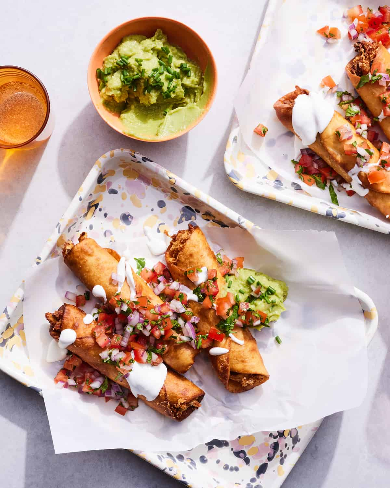

Chicken Flautas

Description
What's not to love about a flour tortillas filled with your favorite ingredients, rolled and pinned up and then lightly fried to toast? It's heaven. Chicken Flautas are crispy and a bit flakier than that of their taquito counterpart. I love stuffing mine with really simple ingredients like a store bought rotisserie chicken, plenty of cheese and taco seasoning.
Ingredients
- Taco seasoning
- Rotisserie chicken
- Monterey jack cheese
- Chopped green chiles
- Soft flour tortillas
- Toothpicks
- Salt
- Canola oil
- Sour cream
- Guacamole
- Pico
- Salsa
Steps
- In a large bowl, stir together the taco seasoning and the chicken and toss to coat.
- Stir in the cheese and green chilies.
- Working with 1 tortilla at a time, spoon about ⅓ cup of the chicken mixture onto the center of the tortilla. Use your fingers to press the chicken mixture into a tight line across the middle of the tortilla.
- Tightly roll the tortilla around the filling; secure the tortilla in place using one toothpick. (Weave the toothpick through the tortillas where they overlap to close, parallel to the roll). Repeat with the remaining chicken mixture and tortillas.
- Preheat the oven to 250°. Heat ½-inch of oil in a large cast iron skillet over medium heat until it registers 375°. Fry 4 flautas, turning occasionally, until golden brown on all sides, 1 to 2 minutes.
- Transfer to a paper towel lined baking sheet; keep warm in oven. Continue frying until all flautas are cooked. Serve hot with sour cream, guacamole, and salsa.